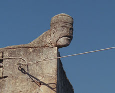

|
RODAKIS
Olaf Nicolai | D 2008 | 12 Min.
Material: 35mm
Format: 35mm
Originalsprache: Englisch
Drehbuch: Olaf Nicolai
Kamera: Olaf Nicolai
Schnitt: Olaf Nicolai
Produktion: Olaf Nicolai
Mit freundlicher Genehmigung der Galerie Eigen + Art, Leipzig/Berlin
Portrait einer Person in Form eines architektonischen Dokumentarfilms. Das "Haus von Rodakis", Ende des 19. Jahrhunderts auf der griechischen Insel Ägina erbaut, wurde zur Ikone der modernen Architektur avant la lettre. Unter dem Namen seines Erbauers Alexis Rodakis stilisierten die Architekten Dimitris Pikionis, Entdecker des Hauses, und später Siegfried Gideon und Le Corbusier es zum Mythos. Von Rodakis selbst ist kaum etwas überliefert, nicht einmal ein Foto. Der Film imaginiert, ausgehend von der geisterhaften Anwesenheit von Rodakis in den Gemäuern des Hauses, seine Biographie. Die Kamera fängt dokumentarisch den heutigen Bau-Zustand des Hauses ein, der zur Folie einer nahezu fiktiven Erzählung wird.
Olaf Nicolai, geb. 1962 in Halle/Saale, studierte Literatur- und Sprachwissenschaft in Leipzig, Wien und Budapest und promovierte 1992 mit einer Arbeit über die "Wiener Gruppe". Daneben legte er 1988 ein Diplom an der Fachschule für Angewandte Kunst in Schneeberg ab. Seine künstlerischen Arbeiten und Projekte wurden in zahlreichen internationalen Einzel- und Gruppenausstellungen gezeigt. Gegenwärtig lebt und arbeitet er in Berlin. "Rodakis" ist sein erster 35mm-Film.
Ausstellungen: Galerie Eigen + Art, Berlin 2005 |
BASE - Progetti per l'arte, Florenz 2003
Gruppenausstellungen (Auswahl): Kunsthalle Tübingen 2007 |
Galerie Eigen + Art, Berlin 2006 | Haunch of Venison, London 2005 |
Biennale Venedig 2005 |
Artists Space New York 2005 |
Kunstverein Medienturm Graz 2005 | Deutsches Hygiene-Museum 2005
zurück
|